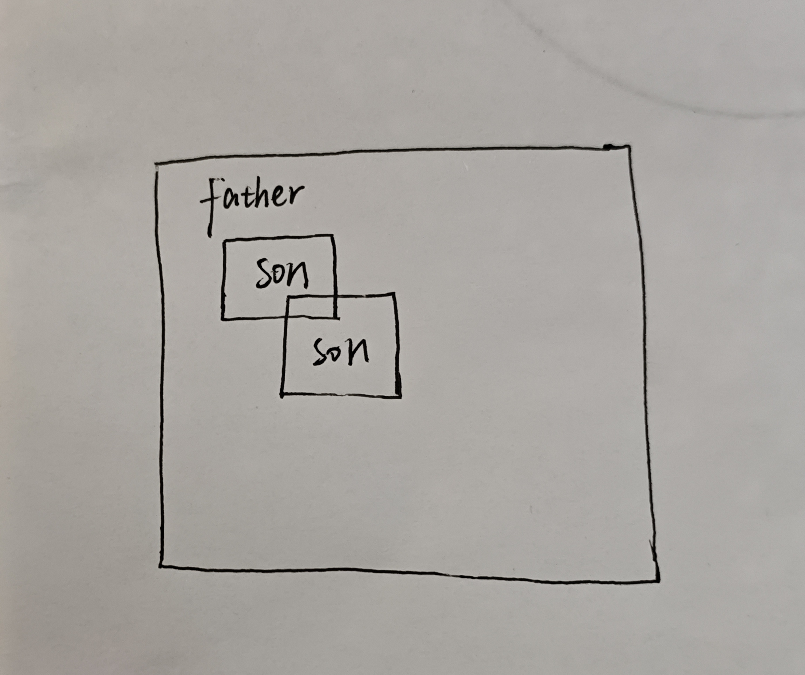

H5语义布局 + 溢出/隐藏过渡动画 实践作业
第一部分：看代码找错
BUG1:将overflow:hidden;添加到.box li中
BUG2:将transition从hover内移除,放到.box img中
BUG3:将position:relative;添加到.box li中
修改后的代码
.box li{
width: 300px;
overflow:hidden;
position:relative;
}
.box img{
width: 100%;
transition: all .6s;
}
.box li:hover img{
transform: scale(1.2);
}
.txt{
position: absolute;
bottom: 0;
height: 40px;
background: rgba(0,0,0,.6);
}
.box{
display: flex;
}
第二部分：补全代码
2.1 语义标签填空
- header
- nav
- main
- aside
- footer
2.2 卡片动画补全
- overflow:hidden;
- position:relative;
- .box li img 、.box li:hover img
- 写在默认元素上
- nth-child(odd)
2.3 flex两栏布局填空
- flex
- gap:8px;
第三部分：手写原理简答

- overflow:hidden 作用1:裁切超出容器的溢出内容;作用2:清除浮动
- 不会。transform:scale仅做视觉缩放,不会改变文档流占位大小，不会挤压旁边卡片
- transition写hover:只有移入有动画,移出瞬间复原；写普通选择器：移入移出都有平滑过渡
- 现象:卡片hover放大图片会跑出卡片,盖住旁边卡片。排查:检查父盒子样式,发现没有添加overflow:hidden。修复:给卡片父容器添加overflow:hidden,溢出内容被裁切，动画不会遮挡相邻卡片
第四部分：扩展挑战
左下角回到顶部按钮,只用CSS实现